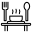
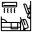
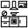
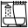
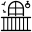
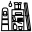
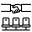
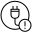
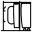
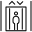

АПК Синапс v1.0. ПО. Спецификации на разработку
Последнее изменение: 24.11.2025
1. Общие положения
1.1. Названия файлов с иконками имеют следующий формат: XXX_Nazvanie_ikonki.svg, где:
- XXX — уникальный числовой идентификатор.
- Nazvanie_ikonki — название иконки транслитерацией без пробелов.
1.2. У иконок локаций идентификатор начинается с 200 и заканчивается 299.
1.3. Идентификатор 200 — дефолтная иконка.
1.4. По идентификатору иконка привязывается к локации, поэтому на иконке с использовавшимся идентификатором содержимое должно сохраняться при обновлении версии приложения. Если на иконке 205 была кухня, то менять её можно только стилистически.
1.5. В новых версиях можно добавлять новые иконки, но только с новыми идентификаторами.
2. Текущий набор
Папка с иконками на GitHub: https://github. ... es/Ico/Location
Если ниже у иконки нет самого изображения, то либо она еще не нарисована, либо где-то накосячили с названием файла.
 200_default.svg - Иконка по умолчанию, некая дверь.
200_default.svg - Иконка по умолчанию, некая дверь.
 201_kabinet.svg - Кабинет.
201_kabinet.svg - Кабинет.
 202_hol.svg - Холл.
202_hol.svg - Холл.
 203_peregovornaya.svg - Переговорная.
203_peregovornaya.svg - Переговорная.
204_stolovaya.svg - Столовая.
205_koridor.svg - Коридор.
 206_wc.svg - Тубзик.
206_wc.svg - Тубзик.
207_gostinaya.svg - Гостиная.
208_kuhnya.svg - Кухня.
 209_spalnya.svg - Спальня.
209_spalnya.svg - Спальня.
210_detskaya.svg - Детская.
211_vannaya.svg - Ванная комната.
212_garderob.svg - Гардеробная.
213_prihozhaya.svg - Прихожая.
214_balkon.svg - Балкон / лоджия.
215_terrasa.svg - Терраса.
216_kladovaya.svg - Кладовая.
217_servernaya.svg - Серверная.
218_priemnaya.svg - Приёмная.
219_arhiv.svg - Архив.
220_otdyh.svg - Комната отдыха.
221_razdevalka.svg - Раздевалка.
 222_dushevaya.svg - Душевая.
222_dushevaya.svg - Душевая.
223_kotelnaya.svg - Котельная.
224_elektro.svg - Электрощитовая.
225_masterskaya.svg - Мастерская.
226_torg_zal.svg - Торговый зал.
227_primerochnaya.svg - Примерочная.
 228_zal_restorana.svg - Зал ресторана.
228_zal_restorana.svg - Зал ресторана.
 229_klass.svg - Класс / аудитория.
229_klass.svg - Класс / аудитория.
 230_palata.svg - Палата.
230_palata.svg - Палата.
231_lestnica.svg - Лестница.
232_lift.svg - Лифт.
 233_bassein.svg - Бассейн.
233_bassein.svg - Бассейн.
234_sauna.svg - Сауна / парная.
235_sportzal.svg - Спортзал / тренажёрка.